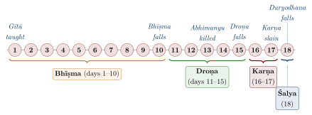
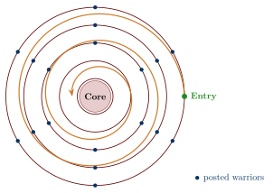
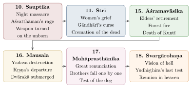

Chapter 5: The Eighteen Parvas of the Mahābhārata¶
namo ’stu te vyāsa viśālabuddhe phullāravindāyatapatranetra /
yena tvayā bhāratatailapūrṇaḥ prajvālito jñānamayaḥ pradīpaḥ //
“Homage to you, Vyāsa of vast intellect, with eyes long as the petals of a full-blown lotus, by whom the lamp of knowledge, filled with the oil of the Bhārata, was lit.”
— Gītādhyāna (traditional invocation)
The eighteen parvans of the Mahābhārata move from royal courts to battlefields and from philosophical teaching to the grief of the survivors. This chapter surveys each book in turn. Chapter counts follow the Poona Critical Edition (CE) unless otherwise stated (Sukthankar et al. 1933–1966; van Buitenen 1973–1978).
5.1 Ādi Parva — The Book of Beginnings¶
The Ādi Parva (“Book of the Beginning,” 225 chapters in the CE) is the prologue to the epic. It sets up the narrative frames (Section 4.18) and tells the history of the Kuru line from Śāntanu. In return for Bhīṣma’s vow of lifelong celibacy, which allows his father to marry Satyavatī, Śāntanu grants him the boon of dying only when he chooses (svacchandamaraṇa) — the boon that later allows Bhīṣma to lie on his bed of arrows until the sun turns north. When Satyavatī’s sons die without heirs, Vyāsa fathers Dhṛtarāṣṭra, Pāṇḍu and Vidura by niyoga (Figure 4.1). The book goes on to the births of the Pāṇḍavas and the Kauravas, Duryodhana’s attempt to burn his cousins in the house of lac (lākṣāgṛha), Draupadī’s svayaṃvara and her marriage to all five brothers, the founding of Indraprastha, Arjuna’s exile and his marriages to Ulūpī, Citrāṅgadā and Subhadrā (Section 10.7), and the burning of the Khāṇḍava forest.
5.2 Sabhā Parva — The Book of the Assembly Hall¶
The Sabhā Parva (72 chapters) contains the event that sets the conflict in motion, the dice game (dyūta). The Asura architect Maya, whom Arjuna had spared in the Khāṇḍava fire, builds the Pāṇḍavas a magnificent hall, and Yudhiṣṭhira performs the imperial Rājasūya sacrifice with Kṛṣṇa as chief guest. Envious of their prosperity, Duryodhana has his uncle Śakuni challenge Yudhiṣṭhira to dice; Yudhiṣṭhira stakes and loses his wealth, his brothers, himself and finally Draupadī. Dragged into the assembly by Duśśāsana, she asks whether Yudhiṣṭhira, having first lost himself, still had the right to stake her; Duśśāsana tries to strip her, and her garment is miraculously renewed (on her prayer to Kṛṣṇa, which the critical text lacks, see Section 4.8). A second game condemns the Pāṇḍavas to twelve years in the forest and a thirteenth in disguise.
The great elders — Bhīṣma, Droṇa, Kṛpa — remain silent or evasive before Draupadī’s question; Bhīṣma replies only that “dharma is subtle.” Only Vidura and the young Kaurava Vikarṇa speak for her. The scene raises the question of the responsibility of the wise to resist adharma when it wears the garb of legality, and it exposes the status of a wife as property (Hiltebeitel 2001); Draupadī’s part in it is discussed in Section 10.2.
5.3 Vana Parva — The Book of the Forest¶
The Āraṇyaka (Vana) Parva (299 chapters), one of the longest books, narrates the twelve years of forest exile, during which the Pāṇḍavas undergo trials, hear many stories and teachings, and make pilgrimages.
Its embedded stories, among them Nala and Damayantī, Sāvitrī and the Rāmopākhyāna, are listed in Table 5.2; its pilgrimage chapters (Tīrthayātrā) describe the sacred geography of much of India (Section 12.10); and it ends with the riddles that Dharma, disguised as a Yakṣa, puts to Yudhiṣṭhira at a forest pool (Section 9.5). The most quoted answer is found only in the vulgate:
The Yakṣa’s Questions — Āraṇyaka Parva (vulgate 3.313.116; not in the Critical Edition)
ahany ahani bhūtāni gacchantīha yamālayam /
śeṣāḥ sthāvaram icchanti kim āścaryam ataḥ param //
Translation:
“Day after day creatures go to the abode of Yama, yet those who remain wish to remain for ever. What could be more astonishing than this?”
5.4 Virāṭa Parva — The Book of Virāṭa¶
The Virāṭa Parva (67 chapters) narrates the thirteenth year of exile, during which the Pāṇḍavas must live undiscovered. They take service at the court of King Virāṭa of the Matsyas, each in disguise. When the king’s brother-in-law Kīcaka harasses Draupadī, Bhīma kills him secretly; at the end of the year Arjuna, as Bṛhannalā, defeats a Kaurava cattle raid single-handed (Table 5.1).
| Pāṇḍava | Alias | Role | Skills Employed |
|---|---|---|---|
| Yudhiṣṭhira | Kaṅka | Brahmin companion to the king | Dice, conversation |
| Bhīma | Ballava | Cook | Cooking, wrestling |
| Arjuna | Bṛhannalā | Dance and music teacher to the princess | Arts learned from the Gandharva Citrasena; living as a eunuch under Urvaśī’s curse |
| Nakula | Granthika | Keeper of horses | Horsemanship |
| Sahadeva | Tantipāla (Ariṣṭanemi) | Keeper of cattle | Knowledge of cattle |
| Draupadī | Sairandhrī | Queen’s maid | Dressing and attendance |
5.5 Udyoga Parva — The Book of Effort¶
The Udyoga Parva (197 chapters) describes the diplomatic and military preparations for war, and it contains some of the epic’s fullest discourses on statecraft and on the ethics of war and peace. Kṛṣṇa goes as envoy to the Kaurava court, offering peace in exchange for a small share of the kingdom — in Yudhiṣṭhira’s proposal, as little as five villages; when the Kauravas try to seize him he reveals his cosmic form in the assembly, and Duryodhana refuses to yield even as much land as can be covered by the point of a needle. On a sleepless night before the embassy Vidura gives the blind king his counsel (the Vidura Nīti; Section 9.4), and the sage Sanatsujāta teaches him on death and the self (Section 11.3). Kṛṣṇa and then Kuntī reveal to Karṇa that he is Kuntī’s eldest son; he refuses to desert Duryodhana but promises Kuntī that he will kill none of her sons except Arjuna. Bhīṣma explains why he will not fight Śikhaṇḍin, who was born a woman, Ambā reborn (Section 10.9); and Nārada tells Duryodhana the story of Gālava and Mādhavī (Section 10.7).
5.6 Bhīṣma Parva — The Book of Bhīṣma¶
The Bhīṣma Parva (117 chapters) covers the first ten days of the Kurukṣetra war, during which Bhīṣma commands the Kaurava forces. It contains the Bhagavad Gītā (chapters 23–40 of this parvan in the CE; 25–42 in the vulgate).
5.6.1 The Bhagavad Gītā¶
The Gītā, the best-known part of the Mahābhārata, is a discourse by Kṛṣṇa to Arjuna on the battlefield (see Chapter 6).
5.6.2 Bhīṣma’s Fall¶
On the tenth day the Pāṇḍavas, on Bhīṣma’s own advice, place Śikhaṇḍin in front of Arjuna. Bhīṣma, who will not fight one who was formerly a woman, lowers his weapons, and Arjuna, shooting from behind Śikhaṇḍin, brings him down. The great warrior lies on a bed of arrows (śaraśayyā), waiting for the winter solstice (the beginning of uttarāyaṇa) to die (Figure 5.1).

5.7 Droṇa Parva — The Book of Droṇa¶
The Droṇa Parva (173 chapters) covers days 11–15 of the war, under Droṇa’s command. On the thirteenth day Droṇa draws up his army in the circular formation (cakravyūha or padmavyūha; Figure 5.2). Arjuna’s young son Abhimanyu breaks into it alone, is cut off, and is killed after being attacked by several great warriors at once — a flagrant breach of the conventions of combat. (The popular story that he learned how to enter, but not leave, the formation while in his mother’s womb is a later addition.) Arjuna vows to kill Jayadratha, who had blocked the Pāṇḍavas from rescuing his son, before sunset the next day, and does so with Kṛṣṇa’s help. In the night battle that follows, Bhīma’s Rākṣasa son Ghaṭotkaca is killed by Karṇa with the infallible spear he had been saving for Arjuna. Droṇa himself falls through a stratagem. On Kṛṣṇa’s advice, Bhīma kills an elephant named Aśvatthāman and the Pāṇḍavas tell Droṇa that “Aśvatthāman is dead”; Yudhiṣṭhira, the one man Droṇa will believe, confirms it, adding “the elephant” indistinctly, and his chariot, which had always floated above the ground, touches the earth. Droṇa lays down his arms and is beheaded by Dhṛṣṭadyumna.

5.8 Karṇa Parva — The Book of Karṇa¶
The Karṇa Parva (69 chapters) covers days 16–17, under Karṇa’s command, and builds to the duel of Karṇa and Arjuna. When Karṇa’s chariot wheel sinks into the earth he appeals to the rules of fair combat; Kṛṣṇa answers by reminding him of his own part in Draupadī’s humiliation and Abhimanyu’s death, and Arjuna kills him as he struggles to free the wheel. Earlier in the book Kṛṣṇa stops Arjuna from killing Yudhiṣṭhira to keep a rash vow, with a discourse on the subtlety of truth (Section 9.3).
5.9 Śalya Parva — The Book of Śalya¶
The Śalya Parva (64 chapters) covers the eighteenth and final day of the war. Śalya commands the remaining Kaurava forces and is killed by Yudhiṣṭhira. Duryodhana hides in a lake (Dvaipāyana hrada) and is drawn out to a mace duel with Bhīma, who on Kṛṣṇa’s hint strikes him on the thighs — fulfilling his vow but violating the rules of mace combat, to the fury of Balarāma — and leaves him mortally wounded. The book also contains a long account of Balarāma’s pilgrimage along the Sarasvatī.
5.10 Sauptika Parva — The Book of the Sleeping Warriors¶
The Sauptika Parva (18 chapters) narrates the darkest episode of the war — Aśvatthāman’s night massacre.
Aśvatthāman, Kṛpa and Kṛtavarman attack the Pāṇḍava camp at night, after Aśvatthāman has seen an owl kill sleeping crows and dedicated himself to Śiva. They slaughter the sleeping warriors, including Dhṛṣṭadyumna and all five sons of Draupadī. Pursued, Aśvatthāman releases a supreme weapon (brahmaśiras) which he redirects into the wombs of the Pāṇḍava women; Kṛṣṇa promises to revive the stillborn child of Uttarā (Parīkṣit), and curses Aśvatthāman to wander the earth for three thousand years.
5.11 Strī Parva — The Book of Women¶
The Strī Parva (27 chapters) gives voice to the grief of the women who have lost sons, husbands, brothers and fathers in the war (Fitzgerald 2004). Gāndhārī walks the battlefield lamenting her hundred sons and curses Kṛṣṇa that his own clan will destroy itself (Section 10.4); Kuntī reveals that Karṇa was her first-born son; and the dead are cremated on the banks of the Gaṅgā. Vidura consoles Dhṛtarāṣṭra with the parable of the man in the well (Section 11.1.1).
5.12 Śānti Parva — The Book of Peace¶
The Śānti Parva (353 chapters) is the longest book. Yudhiṣṭhira, overwhelmed by grief and guilt after the war, wishes to renounce the throne and must be persuaded to rule; Bhīṣma, from his bed of arrows (śaraśayyā), instructs him in three sections: Rājadharma, the duties of kings (chapters 1–128 in the CE); Āpaddharma, conduct in emergencies (129–167); and Mokṣadharma, the pursuit of liberation (168–353), which ends with the Nārāyaṇīya. Its political teaching is summarised in Section 4.17, āpaddharma in Section 9.5, and the Mokṣadharma in Chapter 11.
5.13 Anuśāsana Parva — The Book of Instructions¶
The Anuśāsana Parva (154 chapters) continues Bhīṣma’s teachings, with emphasis on gifts (dāna), vows and observances, right conduct and the merits of various religious practices; it includes the Viṣṇusahasranāma. Bhīṣma then gives up his life at the turning of the sun.
5.14 Aśvamedhika Parva — The Book of the Horse Sacrifice¶
The Āśvamedhika Parva (96 chapters) narrates Yudhiṣṭhira’s horse sacrifice, performed to atone for the slaughter of the war and to affirm his sovereignty. It also contains the Anugītā, a second discourse by Kṛṣṇa to Arjuna, who confesses that he has forgotten the first; and the birth and revival of Parīkṣit.
5.15 Āśramavāsika Parva — The Book of the Hermitage¶
The Āśramavāsika Parva (47 chapters) narrates the retirement of Dhṛtarāṣṭra, Gāndhārī and Kuntī to the forest, the appearance of the dead warriors to their kin on the bank of the Gaṅgā through Vyāsa’s power, and the death of the three elders in a forest fire.
5.16 Mausala Parva — The Book of the Clubs¶
The Mausala Parva (9 chapters), one of the shortest books, narrates the self-destruction of the Yādava clan in a drunken brawl at Prabhāsa, fought with clubs (musalas) made from reeds — the fulfilment of Gāndhārī’s curse — followed by the death of Balarāma, the death of Kṛṣṇa, shot in the foot by a hunter, and the submergence of Dvārakā by the sea.
5.17 Mahāprasthānika Parva — The Book of the Great Journey¶
The Mahāprasthānika Parva (3 chapters) narrates the Pāṇḍavas’ final renunciation. They crown Parīkṣit and walk towards the Himalayas. One by one, Draupadī and four of the brothers fall, each for a fault that Yudhiṣṭhira names. Only Yudhiṣṭhira, accompanied by a dog that has followed them, reaches the summit, where Indra comes to take him to heaven in his chariot but tells him to leave the dog behind. Yudhiṣṭhira refuses: to abandon one who is devoted to him, he says, would be as grave a sin as killing a brahmin. The dog reveals itself as the god Dharma.
5.18 Svargārohaṇa Parva — The Book of the Ascent to Heaven¶
The Svargārohaṇa Parva (5 chapters), the final book, narrates Yudhiṣṭhira’s last test. In heaven he finds Duryodhana enthroned and is led to a hell where he hears the voices of his brothers and Draupadī; he chooses to remain with them rather than enjoy heaven. The scene proves to be an illusion: Indra explains that Yudhiṣṭhira had to see hell briefly because of his deception of Droṇa. After bathing in the heavenly Gaṅgā he casts off his human body and joins his kin among the gods.
5.19 The Upākhyānas: Stories Within the Story¶
The Mahābhārata contains a great many upākhyānas (embedded sub-stories) that serve several purposes: consoling the Pāṇḍavas during their exile, illustrating points of dharma, and gathering a wide range of religious and legendary lore. Many scholars now see them not as digressions but as deliberately placed narratives that comment on the themes of the main story (Hiltebeitel 2001). See Table 5.2.
| Upākhyāna | Parva | Narrator | Theme and Dharmic Teaching |
|---|---|---|---|
| Nala-Damayantī | Vana | Bṛhadaśva | Faithfulness in adversity; love conquers fate |
| Sāvitrī-Satyavān | Vana | Mārkaṇḍeya | Pātivratā Dharma; devotion defeats death |
| Rāmāyaṇa (condensed) | Vana | Mārkaṇḍeya | Consolation; exile ends in triumph |
| Śakuntalā | Ādi | Vaiśaṃpāyana | Recognition of a forgotten marriage; origin of Bharata |
| Yayāti | Ādi | Vaiśaṃpāyana | Dangers of attachment and sensual desire |
| Sūndopasūnda | Ādi | Nārada | Unity is strength; division destroys |
| Manu’s Flood | Vana | Mārkaṇḍeya | Cosmic dissolution and renewal |
| Ambā | Udyoga | Bhīṣma | A woman’s revenge for a wrong done by the powerful |
| Kapila and Syūmaraśmi | Śānti | Bhīṣma | Ritual action versus renunciation |
| The story of Śuka | Śānti | Bhīṣma | Vyāsa’s son attains liberation |
5.19.1 The Nala-Damayantī Episode: A Miniature Epic¶
The story of King Nala and Princess Damayantī (Āraṇyaka Parva 50–78 in the CE) is the most celebrated sub-story in the Mahābhārata and a literary masterpiece in its own right. Its narrative of a king who loses everything at dice, wanders half-mad, and is eventually reunited with his faithful and resourceful wife mirrors the main plot. The sage Bṛhadaśva tells it to Yudhiṣṭhira, who has asked whether any king was ever more unfortunate than he, to show that others have suffered as much and recovered. Damayantī’s choice of Nala over the gods at her svayaṃvara, and her later initiative in tracking down her disguised husband, make her an unusually active heroine. The story inspired Śrīharṣa’s twelfth-century Naiṣadhīyacarita and many regional versions.
5.20 The War Parvas: Day-by-Day Analysis of the Kurukṣetra Battle¶
The battle of Kurukṣetra, lasting eighteen days, is narrated in great detail across four Parvas (Bhīṣma, Droṇa, Karṇa and Śalya). Table 5.3 summarises it day by day.
| Day | Kaurava Commander | Key Event | Notes |
|---|---|---|---|
| 1 | Bhīṣma | Bhagavad Gītā; battle begins | Arjuna’s despondency resolved by Kṛṣṇa’s teaching |
| 2–9 | Bhīṣma | Escalating combat; heavy losses | Bhīṣma proves unbeatable; Kṛṣṇa twice threatens to break his vow not to fight |
| 10 | Bhīṣma | Bhīṣma falls on bed of arrows | Brought down by placing Śikhaṇḍin before Arjuna |
| 11–12 | Droṇa | Droṇa assumes command; attempt to capture Yudhiṣṭhira | The teacher fights his own students |
| 13 | Droṇa | Abhimanyu’s death in the circular formation | Several warriors attack one youth |
| 14 | Droṇa | Arjuna kills Jayadratha; night battle; Ghaṭotkaca killed | Fighting continues after dark |
| 15 | Droṇa | Droṇa killed through deception | “Aśvatthāman is dead” — truth used as a weapon |
| 16 | Karṇa | Karṇa assumes command | Inconclusive fighting; Karṇa asks for Śalya as his charioteer |
| 17 | Karṇa | Karṇa killed by Arjuna | Bhīma kills Duśśāsana; Karṇa is shot while freeing his chariot wheel |
| 18 | Śalya | Śalya killed; Duryodhana defeated | The mace duel; the night massacre follows |
5.21 The Post-War Parvas: The Price of Victory¶
The narrative books that follow the war (Sauptika and Strī, and, after the didactic Śānti and Anuśāsana and the Āśvamedhika, the last four books) dwell on its consequences. Victory brings no joy; the victors are left with grief, guilt and a ruined world (Figure 5.3).

The epic thus ends not with a celebration of triumph but with the transience of worldly glory, which is why Ānandavardhana judged its dominant mood to be tranquillity born of disillusion (Section 1.7).
5.22 Threads and Teachings Across the Parvas¶
5.22.1 Interconnections Between the Parvas: Narrative Threads¶
The Mahābhārata is not a linear narrative but a web of themes, prophecies and consequences that span many books. The sage Kiṃdama’s curse on Pāṇḍu in the Ādi Parva determines the divine paternity of the Pāṇḍavas. Draupadī’s humiliation in the Sabhā Parva becomes a driving force behind the war. Śikhaṇḍin’s change of sex, rooted in the story of Ambā told in the Udyoga Parva, determines the fall of Bhīṣma; and Gāndhārī’s curse on Kṛṣṇa after the war (Strī Parva) brings about the destruction of the Yādavas (Mausala Parva).
These threads function as a system of causation in which vows, curses and boons shape later events. They express the epic’s concern with the consequences of action (karman), though the text also leaves much to fate (daiva) and time (kāla), whose relation to human effort its characters repeatedly debate.
5.22.2 The Didactic Parvas: An Encyclopaedia Within an Epic¶
The Śānti and Anuśāsana Parvas together make up roughly a quarter of the critical text. Bhīṣma, lying on his bed of arrows, discourses on the duties of kings, conduct in times of distress, the nature of the self and the paths to liberation, gifts and observances, and the duties of the social classes and of women (Table 5.4).
| Topic | Scope of Discussion |
|---|---|
| Rājadharma | Duties of the king, taxation, justice, protection of subjects, appointment of ministers |
| Āpaddharma | Conduct during emergencies, when ordinary rules may be modified |
| Mokṣadharma | Paths to liberation; early forms of Sāṅkhya, Yoga and Vedāntic thought (Chapter 11) |
| Dānadharma | The ethics and merit of gifts, especially to brahmins |
| Strīdharma | The duties of wives, notably in the dialogue of Śiva and Umā in the Anuśāsana Parva |
| Varṇadharma | The duties of the social classes. Some passages define a brahmin by conduct rather than birth (for example Yudhiṣṭhira’s answer to Nahuṣa in the Āraṇyaka Parva), while many others affirm hereditary hierarchy and the subordination of Śūdras |
The didactic books carry out the epic’s claim to be a complete guide to life, and they are also the main evidence for the brahmanical social thought of the period in which it took shape (Sutton 2000; Fitzgerald 2004).